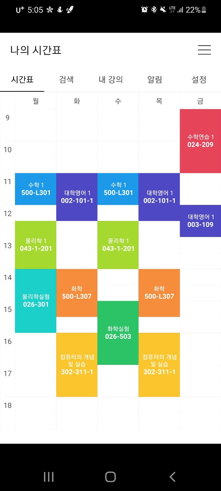

Hypertext Markup Language(HTML) is the standard markup language for creating web pages for creating web pages and web applications. Web browsers receive HTML documents from a web server or from local storage and render them into multimedia web pages. HTML describe the structure of a web page semantically and oringinally included cues for the appearance of the document.

HTML elements are the building blocks of HTML pages. With HTML conmstructs, images and other objects, such as interactive forms, may be embedded into ther rendered page. It provides a means to create structual semantics for text such as headings, paragraphs, lists, links, quotes and other items. HTML elements are delineated by tags, written using angle brackets.
These are the Classes I heard in the Spring semester of 2021.
